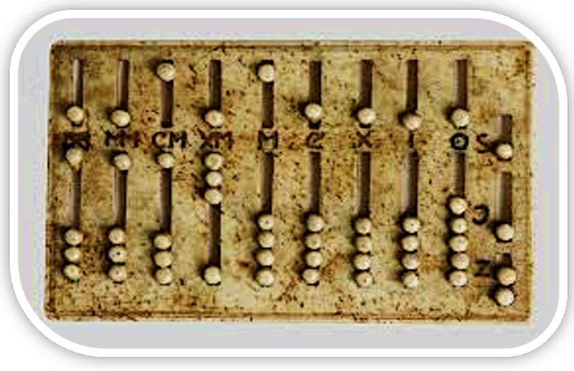

Présentation du Cours
Ce cours est destiné aux étudiants de la première année, toutes filières confondues. Le but principal de ce module est d’amener l’apprenant à maîtriser les notions de base d’interaction avec un environnement digital dans le but de réaliser des tâches simples et quotidiennes de gestion de l’information.
Objectifs pédagogiques :
• Préparer et manipuler son environnement de travail
• Rechercher efficacement des ressources numériques
• Produire des documents sous format de document MS Word en respectant les standards
• Réaliser des présentations structurées et animées en utilisant MS Powerpoint
• Organiser, traiter et visualiser les données en utilisant MS Excel
Prérequis : Aucun prérequis.
Programme du module (7 Séquences) :
Séquence 01 : Environnement de travail matériel
Séquence 02 : Environnement de travail Logiciel
Séquence 03 : Internet et le Web
Séquence 04 : Intelligence artificielle et applications
Séquence 05 : MS Word
Séquence 06 : MS Excel
Séquence 07 : MS PowerPoint
Contexte de la Formation Fondamentale :
Ce module s'inscrit dans le cadre des compétences clés "Digital Skills / Culture digitale" dispensées au cours du Semestre 2 (S2) de la première année de Licence (parcours global de 180 crédits incluant l'obtention d'un certificat en langue étrangère).
Sequence 1 : Environnement de travail matériel
Histoire de l'évolution des ordinateurs
Introduction
Dans un monde en constante évolution, la création de l'ordinateur a représenté une révolution technologique majeure qui a radicalement transformé notre manière de vivre, de travailler et de communiquer. Mais pourquoi nos aînés ont-ils inventé l'ordinateur ? Un des facteurs était ce désir profond de dépasser les limites humaines en manière de calcul et de traitement de l'information.
Développement des ordinateurs au fil des époques
▪ Premier ordinateur rustique : le Boulier
Le premier ordinateur représentait une simple « machine à calculer ». Il était sous forme de boulier en bois que l'on appelle aussi Abacque et a été créé en l'an 3000 avant Jesus-Christ en Chine Antique (voir figure 1).

▪ Première génération des ordinateurs (1940 – 1950)
La première génération d'ordinateurs, qui a émergé entre 1940 et 1950, marque une période révolutionnaire dans le domaine de la technologie informatique. Cette ère est caractérisée par l'invention et le développement des premiers ordinateurs électroniques à grande échelle. Parmi ces machines pionnières, l'ENIAC (Electronic Numerical Integrator and Computer) est sans doute l'une des plus emblématiques. Conçu et construit entre 1943 et 1945, l'ENIAC fut l'un des premiers ordinateurs entièrement électroniques et programmables. Sa conception massive était principalement due à l'utilisation de tubes à vide, aussi appelés tubes cathodiques, qui étaient les principaux composants électroniques de l'époque. Contrairement aux ordinateurs modernes qui fonctionnent sur un système binaire (représentant les données par des 0 et des 1), l'ENIAC était basé sur la représentation décimale des nombres. Cela signifie qu'il utilisait le système numérique à dix chiffres (de 0 à 9) pour le calcul et le traitement des données.
▪ Deuxième génération des ordinateurs (1953 – 1955)
L'avènement du transistor dans les années 1950 représente un tournant majeur dans l'histoire de la technologie informatique et électronique. Cette innovation a permis de remplacer les tubes à vide encombrants et inefficaces, révolutionnant ainsi la conception et la fonctionnalité des ordinateurs (figure 2 et 3).
Figure 2 : Tube à vide
Le TRADIC (Transistor Digital Computer), développé pour l'US Air Force, fut l'un des premiers ordinateurs entièrement basés sur des transistors. Mis en service en 1954, le TRADIC symbolisait une avancée considérable par rapport à ses prédécesseurs de la première génération.
Figure 3 : Transistors
▪ Quatrième génération des ordinateurs : les micro-ordinateurs
L'émergence des micro-ordinateurs dans les années 1970 a marqué un tournant décisif dans l'histoire de l'informatique, rendant la technologie accessible et abordable pour le grand public. Cette révolution a été rendue possible grâce à l'invention du microprocesseur, un dispositif intégrant toutes les fonctions d'un processeur d'ordinateur sur un seul circuit intégré.
En 1972, le Micral N (voir figure 7), souvent considéré comme le premier micro-ordinateur commercial, a été introduit. Utilisant l'Intel 8008, l'un des premiers microprocesseurs disponibles sur le marché.
Figure 7 : Micral N
Résumé
En résumé, le développement des micro-ordinateurs avec l'introduction de microprocesseurs et les innovations apportées par des machines comme le Micral N et le Xerox Alto ont joué un rôle crucial dans la démocratisation de la technologie informatique. Ces avancées ont non seulement rendu les ordinateurs plus accessibles et faciles à utiliser pour le grand public, mais elles ont également ouvert de nouvelles voies pour l'innovation dans le domaine de l'informatique personnelle.
Les principaux composants d'un ordinateur
Introduction
Dans cette section vous découvrez les principaux composants d'un ordinateur qui le rendent extraordinaire, fonctionnel et efficace. Un ordinateur, qu'il soit aussi grand qu'une salle de serveurs ou aussi petit qu'un ordinateur portable, est un assemblage complexe de composants matériels et logiciels travaillant en harmonie pour exécuter une ou plusieurs tâches. Chaque composant joue un rôle crucial, contribuant à la capacité globale de l'ordinateur de traiter des données, d'exécuter des programmes et de communiquer avec le monde extérieur. Nous allons nous concentrer sur les éléments matériels, ou le "hardware".
Le microprocesseur (CPU)
Le microprocesseur est l'un des composants les plus vitaux dans la structure d'un système informatique. Il s'agit d'une puce électronique complexe qui exécute les instructions des programmes informatiques, traitant les opérations logiques, arithmétiques, de contrôle et d'entrée/sortie. Sa fonction est d'interpréter et d'exécuter les instructions provenant des logiciels et des autres composants matériels.
Figure 1 : Le microprocesseur
Le microprocesseur (CPU) - Exemple
Prenons l'exemple du processeur Intel® Core™ i9-13900K :
- Marque : Intel® Core™
- Famille de processeur : i9
- Modèle : 13900
- Le premier ou les deux premiers chiffres du modèle (dans ce cas, 13) indiquent le numéro de génération.
- Les chiffres qui suivent le numéro de génération - 900 - sont le numéro du processeur.
- Ligne de produit : K
- La lettre à la fin du SKU désigne le processeur comme faisant partie d'une série - dans ce cas, la série K, désignant un processeur de jeu non verrouillé qui permet l'overclocking.
La mémoire Morte (ROM — Read-Only Memory)
La ROM joue un rôle fondamental, distinct de celui de la RAM, dans le fonctionnement global de l'ordinateur. Contrairement à la RAM, la ROM est une mémoire non volatile. Cela signifie que les informations et les instructions stockées dans la ROM sont préservées même lorsque l'ordinateur est éteint ou redémarré. La mémoire ROM contient des instructions essentielles pour les opérations de base de l'ordinateur, notamment le firmware ou le logiciel système intégré qui démarre l'ordinateur. L'un des composants les plus importants stockés dans la ROM est le BIOS (Basic Input/Output System), un ensemble de directives qui gère la communication entre le système d'exploitation et les périphériques matériels de l'ordinateur.
Figure 2 : Mémoire ROM (Read Only Memory)
Le disque dur
2- Disques Durs SATA (Serial Advanced Technology Attachment) : Les disques durs SATA sont une évolution des disques durs IDE, offrant des vitesses de transfert de données plus élevées et une meilleure efficacité grâce à leur interface série.
3- Disques SSD (Solid State Drives) : Les disques SSD représentent une avancée significative en matière de stockage de données. Contrairement aux disques durs traditionnels qui utilisent des disques rotatifs et des têtes de lecture/écriture mécaniques, les SSD utilisent des puces de mémoire flash sans pièces mobiles.
Important
Tous les composants ayant pour objectif de stocker une quantité d'informations tels que la mémoire RAM ou ROM ou le disque dur disposent d'une capacité de stockage. Celle-ci peut être exprimée en bit (b), et bytes (en français octet). Un bit correspond à une valeur binaire 0 ou 1. Un octet est équivalent à 8 bits. Vous aurez ainsi compris que toutes les informations de l'ordinateur sont codées en bits et donc en octets.
Résumé des composants
Les principaux composants qu'on a découvert peuvent être résumés ainsi :
- Microprocesseur (CPU) : Le cerveau de l'ordinateur, responsable de l'exécution des instructions des programmes. Sa vitesse est déterminée par sa fréquence en hertz (Hz).
- Mémoire Vive (RAM) : Mémoire temporaire utilisée pour stocker les données des programmes en cours d'exécution. Une capacité de RAM plus élevée permet un meilleur multitâche et une exécution plus fluide des applications.
- Mémoire Morte (ROM) : Mémoire non-volatile contenant des données essentielles pour le démarrage et le fonctionnement de base de l'ordinateur, comme le BIOS.
- Disque Dur : Utilisé pour le stockage permanent des données. Il existe différents types, y compris les disques durs IDE, SATA, et les disques SSD.
- Carte Mère : Le composant qui relie tous les autres composants de l'ordinateur, permettant leur communication et interaction.
La représentation de l'information dans un système informatique
Introduction
L'ordinateur ne comprend que le langage machine qui est le langage binaire. En réalité il s'agit de signaux électriques que capte l'ordinateur; Le 1 veut dire qu'il y a passage du courant, et 0 non. Mais il n'est pas pratique de communiquer avec l'ordinateur avec le langage binaire ! Pour cela, on a traduit le langage binaire en créant la table ASCII (American Standard Code for Information Interchange) que vous pouvez trouver facilement en ligne.
Le codage binaire: La base binaire
Le langage binaire est un système de représentation de l'information basé sur deux symboles : 0 et 1. C'est le langage fondamental des ordinateurs, car les circuits électroniques ne peuvent manipuler que deux états (tension haute = 1, tension basse = 0).
Pourquoi utiliser le binaire ?
▪ Il est facile à implémenter avec des transistors (états ON/OFF).
Comment l'ordinateur l'utilise ?
▪ Tout ce que nous voyons à l'écran (texte, images, vidéos, sons) est converti en séquences de 0 et 1 pour être stocké, traité et affiché.
Les unités de mesure en informatique
En informatique, la quantité d'information est mesurée en bits et octets.
▪ Le bit (binary digit)
• Définition : Plus petite unité d'information, représentant 0 ou 1.
• Exemple : Le nombre binaire 1011 contient 4 bits.
▪ L'octet (Byte)
• 1 octet = 8 bits (exemple : 11001010).
• Il permet de représenter un caractère en ASCII (ex : 'A' = 01000001).
| Unité | Abréviation | Équivalence |
|---|---|---|
| 1 bit | - | 0 ou 1 |
| 1 octet (Byte) | B | 8 bits |
| 1 kilo-octet | Ko | 1 024 octets |
| 1 méga-octet | Mo | 1 024 Ko |
| 1 giga-octet | Go | 1 024 Mo |
| 1 téra-octet | To | 1 024 Go |
Le système décimal
Les nombres que nous utilisons habituellement sont ceux de la base 10 (système décimal). Nous disposons de dix chiffres différents de 0 à 9 pour écrire tous les nombres. D'une manière générale, toute base N est composée de N chiffres de 0 à N-1.
▪ Soit un nombre décimal N = 2348. Ce nombre est la somme de : 8 unités, 4 dizaines, 3 centaines et 2 milliers.
Nous pouvons écrire:
2348 = (2 × 10³) + (3 × 10²) + (4 × 10¹) + (8 × 10⁰)
Le système hexadécimal
Le système hexadécimal est un système de numération en base 16. Contrairement à la base décimale qui utilise les chiffres 0 à 9, le système hexadécimal utilise en plus les lettres de A à F, soit 16 symboles au total. Le mot « hexadécimal » commence avec le préfixe « hexa » (hex signifiant 6 en grec) et l'adjectif décimal signifie « qui procède par 10 ».
Le Code ASCII
Le code ASCII est un système de codage qui associe chaque caractère (lettres, chiffres, symboles) à une valeur numérique en base binaire. Il est utilisé par les ordinateurs pour représenter du texte en utilisant des octets (8 bits).
▪ Pourquoi utiliser ASCII ?
✓ Permet aux ordinateurs de comprendre et manipuler du texte.
✓ Assure la compatibilité entre différents systèmes informatiques.
▪ Remarque :
✓ Les lettres majuscules (A-Z) sont codées de 65 à 90.
✓ Les lettres minuscules (a-z) sont codées de 97 à 122.
✓ Les chiffres (0-9) vont de 48 à 57.
Table ASCII
[Image : Table ASCII complète]
Insérez ici l'image de la table ASCII
La conversion de la base décimale à la base binaire
Soit le nombre 18, pour le transformer en binaire, on le divise successivement par 2 et on prend les restes.
9 ÷ 2 = 4 reste 1
4 ÷ 2 = 2 reste 0
2 ÷ 2 = 1 reste 0
1 ÷ 2 = 0 reste 1
➜ (18)₁₀ = (10010)₂
La conversion de la base binaire à la base décimale
Soit le nombre binaire 10010 pour le représenter dans le système décimal on procède comme suit :
= 0×1 + 1×2 + 0×4 + 0×8 + 1×16
= 2 + 16 = 18
➜ (10010)₂ = (18)₁₀
La conversion d'un nombre binaire en hexadécimal
Soit le nombre binaire 111100011100101 pour le représenter dans le système hexadécimal on procède comme suit (groupement par 4 bits depuis la droite) :
Groupes : 0111 | 1000 | 1110 | 0101
Valeurs : 7 | 8 | E | 5
➜ (111100011100101)₂ = (78E5)₁₆
Conversion de code ASCII en binaire
Exemple : Ahmed
h (104 en décimal) → 0110 1000
m (109 en décimal) → 0110 1101
e (101 en décimal) → 0110 0101
d (100 en décimal) → 0110 0100
Ahmed (ASCII) = (0100 0001 0110 1000 0110 1101 0110 0101 0110 0100)₂
Exercices
- Convertir en unité de mesure donnée : 10 ko = …… Bit 1 To = ……… Octet 8192 Bit = …… Ko
- Convertir en binaire puis en hexadécimal, les nombres suivants : 120, 255, 512, 257, 1001
- Convertir en décimal puis hexadécimal, les nombres suivants : 0111100, 1111001, 11101100, 1000100001, 10010001111
- Ecrire le mot « Informatique » en décimal, hexadécimal et en binaire utilisant le Code ASCII.
Les périphériques d'entrée et de sortie
Définition
Un périphérique informatique est un dispositif connecté à un système de traitement de l'information central (ordinateur, smartphone, console de jeu, etc.) et qui ajoute à ce dernier des fonctionnalités. En d'autres termes, un périphérique représente tout composant permettant de faire communiquer l'ordinateur avec le monde extérieur.
Types de périphériques
Il existe quatre principaux types de périphériques :
- Les périphériques d'entrée
- Les périphériques de sortie
- Les périphériques d'entrée-sortie
- Les périphériques de stockage
Les périphériques d'entrée
Un périphérique d'entrée est un périphérique informatique permettant de communiquer de l'information à un ordinateur.
Exemples :
Les périphériques de sortie
Un périphérique de sortie est un périphérique informatique permettant de transmettre les informations de l'ordinateur vers les utilisateurs. C'est-à-dire, il récupère l'information à partir de l'unité centrale de l'ordinateur et nous la transmet.
Exemples :
Les périphériques d'entrée-sortie
Ce sont des périphériques particuliers car ils se caractérisent par leur double fonctionnalité :
- Introduction de l'information dans l'ordinateur
- Faire ressortir l'information de l'ordinateur
Les périphériques de stockage
Les unités de stockage sont des mémoires qui conservent les informations de manière permanente (de façon durable).
Exemples :
Fin de la séquence 1 : Environnement de travail matériel — Culture Digitale S1
Section II : Fonctionnement de base des systèmes d’IA : données, algorithmes, types d’apprentissage automatique
Introduction
L'IA repose sur trois piliers :
- Les données — La matière première.
- Les algorithmes — Les règles, les recettes.
- L'apprentissage — La manière dont l'IA améliore ses performances.
Les données : le carburant de l’IA
Les données : indispensables
Plus elles sont nombreuses et variées, plus l'IA est efficace.
Types de données :
- Images (photos, vidéos)
- Textes (SMS, articles)
- Sons (voix, musique)
- Données numériques (capteurs, météo, trafic)
Pour apprendre à reconnaître une pomme, il faut montrer à l'IA des centaines d'images de pommes sous différents angles.
Les algorithmes : les recettes de l'IA
Définition :
Un algorithme est une suite d'instructions logiques et précises qui permettent de résoudre un problème. Dans l'IA, l'algorithme sert à transformer des données en résultats exploitables.
Métaphore simple : la recette de cuisine
- Recette = suite d'étapes à suivre
- Ingrédients = données (images, textes, sons)
- Plat final = résultat (classification, décision, prédiction)
Exemple :
- Ingrédients = images de fruits
- Recette = règles qui comparent la couleur, la taille, la forme, etc.
- Plat final = reconnaissance "pomme", "banane", "orange"
Types d'interactions dans le domaine de l'IA
Premier type d'interaction :
Interaction avec une base de données (exemple : images). Un serveur envoie les données à l'IA (appelée agent) et l'agent restitue des résultats. Cela crée ainsi une boucle.
Deuxième type d'interaction :
Interaction avec un environnement (exemple : machine de production ou jeu vidéo). L'environnement renseigne l'agent sur l'état du jeu. L'agent répond par une action à effectuer sur cet environnement.
Types d’apprentissage automatique
Les trois grands types d'apprentissage automatique
- Apprentissage supervisé : L'IA apprend avec des exemples étiquetés (on connaît la bonne réponse).
- Apprentissage non supervisé : L'IA apprend sans étiquette, elle cherche seule des structures ou des groupes dans les données.
- Apprentissage par renforcement : L'IA apprend par essais-erreurs, en recevant des récompenses ou punitions selon ses actions.
Apprentissage supervisé
Le machine learning supervisé est un type d'apprentissage automatique dans lequel le modèle est entraîné sur un ensemble de données étiqueté (c'est-à-dire que la variable cible ou de sortie est connue).
Dans le cas d'un modèle de prévision des tornades sur une période donnée, un data scientist inclut dans les variables d'entrée la date, le lieu, la température, les schémas de flux de vent, etc., et la sortie correspond à l'activité réelle des tornades enregistrée ces jours-là.
L'apprentissage supervisé est généralement utilisé pour l'évaluation des risques, la reconnaissance d'images, l'analyse prédictive et la détection des fraudes, et comprend plusieurs types d'algorithmes.
Algorithmes de classification :
Ils prédisent les variables de sortie catégorielles (par exemple, « indésirables » ou « pas indésirables ») en étiquetant les données d'entrée. Les algorithmes de classification incluent, entre autres, la régression logistique, les k-plus proches voisins et les machines à vecteurs de support (SVM).
Algorithmes de régression :
Ils prédisent les valeurs de sortie en identifiant des relations linéaires entre des valeurs réelles ou continues (par exemple, la température, le salaire). Les algorithmes de régression comprennent la régression linéaire, la forêt d'arbres décisionnels et l'optimisation de gradient, ainsi que d'autres sous-types.
Apprentissage non supervisé
Les algorithmes d'apprentissage non supervisé, tels que Apriori, GMM (modèles de mélange gaussien) et PCA (analyse en composantes principales), tirent des conclusions à partir d'ensembles de données non étiquetés, facilitant ainsi l'analyse exploratoire des données et permettant la reconnaissance de formes et la modélisation prédictive.
La méthode d'apprentissage non supervisé la plus courante est l'analyse de cluster, qui utilise des algorithmes de clustering pour catégoriser les points de données en fonction de la similarité des valeurs (comme dans la segmentation des clients ou la détection d'anomalies). Les algorithmes d'association permettent aux data scientists d'identifyer les associations entre les objets de données au sein de grandes bases de données, ce qui facilite la visualisation des données et la réduction de la dimensionnalité.
Apprentissage par renforcement
L'apprentissage par renforcement, également appelé apprentissage par renforcement basé sur les commentaires humains (RLHF), est un type de programmation dynamique qui entraîne des algorithmes à l'aide d'un système de récompense et de punition.
Les algorithmes d'apprentissage par renforcement sont courants dans le développement de jeux vidéo et sont fréquemment utilisés pour apprendre aux robots à reproduire des tâches humaines.
Section III : Découverte de l’IA générative : textes, images, audio – fonctionnement et exemples
Introduction
En Mars 2023, Bill Gates le cofondateur de la fameuse société Microsoft, a posté sur son blog le message suivant : il y a trois grands temps dans la transformation informatique. Il y a eu le temps de l'Internet, le temps du mobile et aujourd'hui, le temps de l'IA générative.
Mais pour expliquer ce que c'est que l'IA générative qui fait parler le monde aujourd'hui, nous commençons tout d'abord par rappeler quelques concepts de l'IA Classique. L'IA est une discipline de l'informatique qui existe depuis les années 50 et qui a connu des grandes avancées technologiques et scientifiques. On parle de : Machine Learning, des réseaux de neurones artificiels, Deep Learning pour arriver aujourd'hui à l'IA générative.
Modèles discriminants vs. Modèles génératifs
L'apprentissage automatique ou Machine Learning est un sous-domaine de l'IA. Il s'agit d'un programme ou d'un système qui crée un modèle à partir de données existantes. Plus précisément, l'apprentissage automatique donne à l'ordinateur la capacité d'apprendre sans programmation explicite.
Si l'apprentissage automatique touche un vaste domaine et englobe de nombreuses techniques, l'apprentissage profond est un type d'apprentissage automatique qui permet de traiter des problèmes beaucoup plus complexes que ceux abordés par l'apprentissage automatique. Ceci est dû à l'usage des réseaux de neurones artificiels. Les modèles d'apprentissage profond peuvent être divisés en deux types : les modèles génératifs et les modèles discriminatifs.
C'est un type de modèle qui est utilisé pour classer ou prédire les étiquettes des données. Dans cet exemple, le modèle arrive à prédire l'image en entrée en tant qu'un chien et le classe tel quel et non pas comme un chat.
En plus de sa capacité de prédire que c'est un chien, il peut également générer une nouvelle image d'un chien d'où le nom modèle génératif.
Evolution de l'intelligence artificielle générative
Dans la programmation traditionnelle, nous devons coder en dur les règles permettant de distinguer un chien en définissant ses caractéristiques en détail - Son type ; sa couleur ; le nombre de pattes, … etc.
Nous avons parcouru un long chemin depuis la programmation traditionnelle jusqu'aux modèles génératifs en passant par le concept de réseaux de neurones. Nous allons résumer par la suite le processus de cette remarquable évolution.
Dans la vague des réseaux de neurones :
Nous avons pu donner au réseau des images de chats et de chiens et lui demander s'il s'agit d'un chien, et il arrive à prédire que c'était un chien sans avoir à programmer auparavant ses caractéristiques en détail.
Enfin, dans la vague générative :
Nous pouvons, en tant qu'utilisateurs, générer notre propre contenu en posant simplement une question dans l'invite.
L'intelligence artificielle générative
L'IA Générative est alors un sous domaine de l'apprentissage profond qui crée de nouveaux contenus à base de ce qu'elle a appris du contenu existant. Pour ce faire, L'IA générative uses des réseaux neuronaux artificiels et plus précisément un modèle génératif pour traiter des vastes données non structurées.
Dans ce cas, Le processus d'apprentissage de l'IA Générative permet la création d'un modèle statistique en tentant d'apprendre des motifs structurés à partir d'un contenu non structuré.
Une deuxième caractéristique de L'IA générative par rapport à l'IA classique c'est qu'elle permet de créer des ponts entre les différents domaines tels que : le traitement du langage naturel ou le domaine de l'imagerie. On part d'un texte pour faire une vidéo, d'une vidéo pour faire un podcast ou bien faire des slides à partir d'un fichier audio. Ce qui crée donc des liens multimodaux.
Une bonne façon de distinguer ce qui relève de l'IA générative et ce qui n'en relève pas est illustré sur le schéma suivant :
- Il ne s'agit pas d'IA générative lorsque la sortie est un nombre, une probabilité ou une classe, par exemple : spam ou non-spam, …etc.
- Il s'agit d'IA générative lorsque le résultat est du langage naturel, de la parole ou, une image par exemple.
Nous soulignons que les modèles d'IA générative sont un sous-ensemble de modèles de fondation. Les modèles de fondation sont entraînés sur des données à grande échelle et diversifiées et peuvent être utilisés ou adaptés pour un large éventail de tâches en aval. Au cours des dernières années, plusieurs dizaines de ces modèles de fondation ont été développés, par exemple des modèles de texte à texte comme (GPT) ou de texte à image comme (DALL-E).
On distingue deux types de modèles de l'IA générative selon la nature des données :
Les modèles de langues génératifs :
Ces modèles apprennent à reconnaître les schémas linguistiques grâce à des données d'entraînement. Puis, à partir d'un texte, ils prédisent le texte qui va suivre comme étant le cas de GPT ou générer des images et vidéos comme par exemple DALL-E.
Les modèles d’images génératifs :
Les modèles d’images génératifs produisent de nouvelles images. Ils peuvent aussi générer la légende de l’image, effectuer une recherche par image comme étant le cas de CLIP. Ils peuvent aussi générer la complétion d’une image abimée comme le cas de CoModGAN.
Section IV : Éthique et IA : biais, responsabilité, transparence, impact sur la société et le monde du travail
Introduction
L'intelligence artificielle (IA) occupe une place centrale dans nos sociétés modernes. Elle influence nos choix de consommation, nos loisirs, nos soins de santé et même des décisions administratives ou judiciaires. Cette présence soulève une question majeure : comment l'utiliser de manière éthique ?
- L'IA n'est pas neutre : elle dépend des données, des algorithmes et des concepteurs.
- Mal encadrée, elle peut amplifier les discriminations.
- Bien utilisée, elle devient un outil de progrès et de justice.
Les risques de l'IA selon l'Union Européenne
L'UE a classé les systèmes d'IA en quatre niveaux de risque :
Risque inacceptable : ce sont les IA considérées comme un réel danger car elles vont à l'encontre des droits fondamentaux des personnes.
- Exemple : manipulation du comportement, notation sociale par un État (comme le crédit social en Chine).
- Ces systèmes sont interdits en Europe.
Risque élevé : il concerne les IA utilisées dans des domaines sensibles comme l'éducation, la sécurité, la santé, la justice ou la démocratie. Elles sont autorisées uniquement si elles respectent des règles strictes et subissent des contrôles.
- Exemples : tri automatique de CV, évaluation de risque de crédit, chirurgie assistée par robot.
Risque limité : ici, l'obligation principale est la transparence. L'utilisateur doit être informé qu'il interagit avec une IA.
- Exemple : les chatbots qui répondent automatiquement en ligne.
Risque minime : ces IA ne posent pas de problème majeur et n'exigent pas de réglementation particulière.
- Exemples : filtres anti-spam, jeux vidéo.
Les biais en intelligence artificielle
- On présente souvent l'IA comme un outil "magique" capable de résoudre des problèmes complexes instantanément.
- En réalité, elle reste un produit humain, et donc imparfait.
- Les biais apparaissent principalement lors de l'entraînement :
- Si les données sont incomplètes ou non représentatives, l'IA généralise mal.
- Exemple : une IA entraînée uniquement sur des images de voitures et motos sera incapable de reconnaître correctement un vélo ou un quad.
- Conséquence : ces biais peuvent avoir un impact éthique majeur (discriminations en santé, justice, sécurité, emploi…).
Types de biais :
- Biais de données : base d'apprentissage inégale.
- Biais de conception : préjugés intégrés par les concepteurs.
- Biais de confirmation : les algorithmes renforcent nos préférences.
- Biais d'échantillonnage : données trop restreintes à un groupe.
- Biais d'automatisation : confiance excessive dans la machine.
- Biais temporel : IA limitée par la date de ses données.
Comment limiter les biais IA ?
Améliorer les données : Recueillir des ensembles diversifiés et inclusifs ; s'assurer que toutes les catégories (genre, origine, contexte social…) soient représentées.
Maintenir une supervision humaine : Ne pas accorder une confiance aveugle ; toujours prévoir une validation par des experts humains dans les domaines sensibles.
Adopter un cadre éthique et juridique : Mise en place de lois internationales ; promouvoir des bonnes pratiques de transparence.
La Responsabilité face à l'IA
Les enjeux : L'IA peut causer des dommages non intentionnels. Qui doit répondre ? Le développeur ? L'entreprise ? L'utilisateur ? Ou une responsabilité partagée ?
Défis : Complexité des systèmes (difficile d'identifier la "cause") et risque de dilution de la responsabilité.
Pistes de solution : Cadres juridiques clairs (AI Act), assurances obligatoires, responsabilité graduée et comités d'éthique.
La Transparence de l’IA
Problème de la "boîte noire" : Les modèles (Deep Learning) fonctionnent avec des millions de paramètres, rendant leurs décisions difficiles à expliquer (ex: IA médicale).
Importance : Sans transparence, pas de confiance. Les citoyens doivent pouvoir auditer les systèmes pour réduire les risques de manipulation.
Solutions : IA explicable (XAI), documentation des datasets, rapports d'impact et labels de confiance.
Impact de l'IA sur la société
Points positifs : Santé (diagnostic précoce), Environnement (climat), Accessibilité (handicap) et accélération de l'Innovation scientifique.
Points négatifs / risques : Inégalités (fracture numérique), Surveillance (reconnaissance faciale), Manipulation (désinformation) et perte de lien social.
Enjeux : Garantir que l'IA serve l'intérêt général via une gouvernance mondiale (ONU, UNESCO, UE).
Impact de l'IA sur le monde du travail
Transformations : Automatisation des tâches répétitives, Augmentation de l'humain (assistance) et création de Nouveaux métiers (Data Scientist, Éthicien).
Risques : Destruction d'emplois menacés (chauffeurs, traducteurs), Polarisation du marché et Précarisation via les plateformes numériques.
Enjeux pour l'avenir : Formation continue, politiques sociales (revenu universel ?) et dialogue social avec les employés.
Section V : L’ingénierie des requêtes (Prompt Engineering) : stratégies pour formuler des requêtes adaptées aux outils d’IA
Introduction
Pourquoi apprendre à parler à une IA ?
- L'IA répond exactement à ce qu'on lui demande.
- Formuler un bon prompt = penser et s'exprimer avec précision.
- L'ingénierie des requêtes permet de maximiser la pertinence et la qualité des réponses.
Exemple concret :
- ❌ "Talk about Shakespeare."
- ✅ "Explain in about 200 words the main events of Shakespeare's life and how his experiences influenced his writing."
Qu'est-ce que l'ingénierie des requêtes ?
Définition :
L'art de concevoir des instructions claires et efficaces pour guider un modèle d'IA.
Objectifs :
- Guider le modèle vers une réponse utile.
- Réduire l'ambigüité.
- Structurer la réflexion.
"Describe in 200 words how artificial intelligence can be used to improve healthcare systems."
Qu'est-ce qu'un "prompt" ?
Définition
Un prompt est l'instruction ou la question que l'on donne à un modèle d'IA pour générer une réponse.
- Plus le prompt est clair et précis, meilleure sera la réponse.
- C'est la clé de l'efficacité de l'interaction avec l'IA.
Formes de base
- Question simple : demande directe de réponse. Exemple : "What is the main theme of this poem?"
- Instruction : consigne spécifique sur un texte. Exemple : "Rewrite this paragraph in formal English."
- Texte à compléter / transformer : l'IA continue ou modifie le texte fourni. Exemple : "Complete the following story with a twist ending."
- Exemple guidé : fournir un ou plusieurs exemples avant la réponse. Exemple : "Here are two examples of comparisons. Now identify one in this text."
Les principaux types de prompts
Applications pratiques
- Résumé : "Summarize this article in 5 lines." → Objectif : Synthèse d'information
- Analyse de texte : "Identify the tone and mood of the narrator." → Objectif : Lecture analytique
- Traduction : "Translate this sentence keeping the original style." → Objectif : Sens et reformulation
- Réécriture : "Rewrite this paragraph in simpler English." → Objectif : Clarté et reformulation
- Production écrite : "Write an introduction for an essay on identity." → Objectif : Expression structurée
Cas d'utilisation et exemples d'ingénierie des requêtes
Génération de texte
- Expression écrite : Préciser genre, ton, style et intrigue pour guider l'IA. Exemple : "Écris une nouvelle sur une jeune femme qui découvre un portail magique."
- Synthèse : Fournir du texte et demander un résumé concis des informations clés. Exemple : "Résume les principaux points de cet article sur le changement climatique."
- Traduction : Indiquer langue source et cible pour traduire correctement. Exemple : "Traduis le texte suivant du français vers l'anglais : 'Le renard brun vif saute par-dessus le chien paresseux'."
- Dialogue : Simuler une conversation pour obtenir une réponse contextuelle. Exemple : "Tu es un chatbot qui aide les utilisateurs. Réponds : 'Mon ordinateur ne s'allume pas'."
Systèmes de questions-réponses
- Questions ouvertes : Encourager une réponse complète et informative. Exemple : "Explique le concept de l'informatique quantique et son impact."
- Questions spécifiques : Cibler une information précise à partir d'un contexte ou de la base de connaissances. Exemple : "Quelle est la capitale de la France ?"
- QCM : Fournir des options pour choisir la réponse la plus appropriée. Exemple : "Qui a écrit Harry Potter ? A) Tolkien B) Rowling C) King"
- Questions hypothétiques : Explorer des situations imaginaires pour raisonner ou spéculer. Exemple : "Que se passerait-il si les humains pouvaient voyager à la vitesse de la lumière ?"
- Questions d'opinion : Demander un point de vue et le raisonnement de l'IA. Exemple : "L'IA surpassera-t-elle l'intelligence humaine ? Pourquoi ?"
Génération et manipulation de code
- Complétion : Fournir un code partiel et demander de le compléter. Exemple : "Écris une fonction Python pour calculer la factorielle d'un nombre."
- Traduction : Indiquer le langage source et cible. Exemple : "Traduis ce code Python en JavaScript : def greet(name): print('Hello,', name)"
- Optimisation : Analyser le code existant pour améliorer efficacité, lisibilité ou performance. Exemple : "Optimise ce code Python pour réduire son temps d'exécution."
- Débogage : Identifier les erreurs et proposer des solutions. Exemple : "Débogue ce code Java et explique l'exception NullPointerException."
Génération et édition d'images
- Images photoréalistes : Décrire en détail objets, paysage, lumière et style. Exemple : "Coucher de soleil sur l'océan avec palmiers."
- Images artistiques : Préciser style artistique, technique ou émotion. Exemple : "Rue animée sous la pluie, style impressionniste."
- Images abstraites : Décrire formes, couleurs et concepts pour interprétation libre. Exemple : "Image abstraite illustrant l'espoir, couleurs vives."
- Édition : Fournir image existante et indiquer modifications souhaitées. Exemple : "Remplace l'arrière-plan par un ciel étoilé et ajoute la lune."
Les composantes d'un bon prompt
- Rôle : Indiquer le rôle attendu de l'IA. Exemple : "You are a writing assistant."
- Contexte : Situer la tâche. Exemple : "For a student preparing an English exam."
- Tâche : Dire ce qu'il faut faire. Exemple : "Summarize the following passage."
- Format : Spécifier la forme du résultat. Exemple : "Write one paragraph of about 100 words."
- Style ou contrainte : Donner des indications stylistiques. Exemple : "Use academic English."
- Exemple : Ajouter un exemple de sortie dans un prompt est facultatif, mais cela aide à clarifier le format et le style de réponse attendu, renforçant ainsi la précision des résultats.
Avantages de l'ingénierie des requêtes
Une ingénierie des requêtes efficace offre de nombreux avantages, et améliore les capacités et la facilité d'utilisation des modèles d'IA :
Amélioration des performances du modèle :
Des requêtes bien conçues génèrent des résultats plus précis, pertinents et informatifs issus de modèles d'IA, car elles fournissent des instructions et un contexte clairs.
Réduction des réponses biaisées et potentiellement néfastes :
En contrôlant soigneusement les entrées et en guidant l'attention de l'IA, l'ingénierie des requêtes permet d'atténuer les biais et de réduire le risque de générer des contenus inappropriés ou choquants.
Contrôle et prévisibilité accrues :
L'ingénierie des requêtes vous permet d'influencer le comportement de l'IA et de garantir des réponses cohérentes et prévisibles, correspondant aux résultats souhaités.
Expérience utilisateur améliorée :
Des requêtes claires et concises permettent aux utilisateurs d'interagir plus facilement et efficacement avec les modèles d'IA, ce qui se traduit par des expériences plus intuitives et satisfaisantes.
Section VI : Les outils d’IA accessibles : présentation, démonstration et initiation à leur utilisation (ChatGPT, DeepL, Quillbot)
L'agent conversationnel : CHATGPT
Introduction
L'un des développements les plus remarquables de l'IA à l'heure actuelle est l'émergence de l'agent conversationnel ChatGPT créé par l'entreprise Open AI. Mais, avant d'expliquer son principe de fonctionnement, nous clarifions tout d'abord deux concepts différents, souvent confondus : GPT et ChatGPT.
GPT vs. ChatGPT
GPT (Generative Pre-trained Transformer) est un langage de type LLM (Large Language Model) pour le traitement et la génération du langage naturel. Ces modèles sont des modèles d'apprentissage automatique qui sont extrêmement efficaces lorsqu'il s'agit d'effectuer des tâches liées au langage : traduire, résumer des textes, générer du contenu ou du code, etc.
ChatGPT : C'est un mot-valise : "chat" qui fait référence à une discussion en ligne et "GPT" qui signifie que ChatGPT a été préalablement entraîné pour générer des réponses pertinentes selon le contexte.
Les stades d'évolution des modèles GPT
Le concept GPT a été initialement introduit en juin 2018 avec la publication du premier modèle, GPT-1, puis les autres modèles GPT-2, 3 et 4 sont dévoilés en 2019, 2020 et 2023 respectivement. La principale différence réside dans la taille ainsi que les paramètres qui sont passés de 117 millions dans GPT-1 à 1.76 Trillion dans GPT-4. D’autant plus, GPT-4 peut recevoir maintenant des images ce qui constitue une amélioration majeure puisque les versions précédentes de GPT acceptent uniquement les inputs sous forme de texte.
GPT-4.5 : Introduit en 2024 comme une étape intermédiaire entre GPT-4 et GPT-5, GPT-4.5 a amélioré la compréhension contextuelle et la cohérence des réponses. Cette version a optimisé la capacité à gérer des instructions complexes et a renforcé les performances sur des tâches nécessitant un raisonnement multi-étapes, tout en conservant une vitesse de génération rapide et une meilleure sécurité contre les contenus inappropriés.
GPT-5 : Lancé en 2025, GPT-5 représente un saut significatif dans la génération de texte et la compréhension du langage. Avec des capacités accrues en raisonnement, créativité et synthèse d'informations, GPT-5 offre des interactions plus naturelles et plus fiables, et une meilleure capacité à traiter des contextes très longs. Cette version marque un tournant dans l'évolution des modèles GPT, rapprochant l'IA de conversations quasi humaines.
Le traducteur : DeepL
Qu'est-ce que DeepL ?
DeepL est un traducteur en ligne basé sur l'intelligence artificielle, lancé en 2017 par la société allemande DeepL GmbH. Il est aujourd'hui considéré comme l'un des outils de traduction les plus précis et les plus naturels.
Pourquoi se distingue-t-il ?
- Il utilise des réseaux de neurones profonds (Transformers).
- Il comprend le contexte global d'un texte et l'analyse des mots.
- Il adapte le style, le ton et les expressions.
- Contrairement aux anciens traducteurs, DeepL ne traduit pas mot à mot — il traduit le sens.
De la traduction traditionnelle à la traduction neuronale
Traduction par règles ou probabilités de mots. Résultat : mot à mot, mécanique et souvent rigide.
Compréhension du contexte grâce à l'IA. Résultat : traduction fluide, idiomatique et naturelle.
L'IA a transformé la traduction : on passe d'une approche "grammaticale" à une approche "sémantique et contextuelle".
Le fonctionnement de DeepL
- DeepL repose sur une architecture de réseau de neurones appelée Transformer.
- Ce modèle "lit" la phrase entière, comprend les relations entre les mots et produit une traduction cohérente.
- Il apprend à partir de millions de phrases traduites par des humains.
Texte français : "Il pleut des cordes."
❌ PROMT → "It's raining ropes."
✅ DeepL → "It's raining heavily."
(DeepL comprend qu'il s'agit d'une expression figurée.)
Les avantages de DeepL
💡 DeepL ne traduit pas seulement les mots : il interprète les idées.
L'outil IA de reformulation : QuillBot
Introduction
QuillBot est un outil de révision et de reformulation de textes en ligne. Basé sur des modèles d'intelligence artificielle pour : Réécrire un texte, améliorer la clarté, proposer des synonymes et corriger des erreurs.
Idée clé : QuillBot n'invente pas le sens, il restructure et améliore le texte.
Fonctionnalités principales :
- Paraphrasing : Réécrit dans un style différent (formel, créatif...).
- Grammar Checker : Corrige les fautes grammaticales.
- Synonym Finder : Propose des alternatives lexicales.
- Summarizer : Résume automatiquement un texte long.
Comment ça marche ? L'utilisateur copie son texte, l'IA analyse la structure et le sens, puis elle propose plusieurs versions réécrites. QuillBot utilise des modèles NLP (Transformer), similaires à ceux de GPT, mais orientés vers l'amélioration de texte.